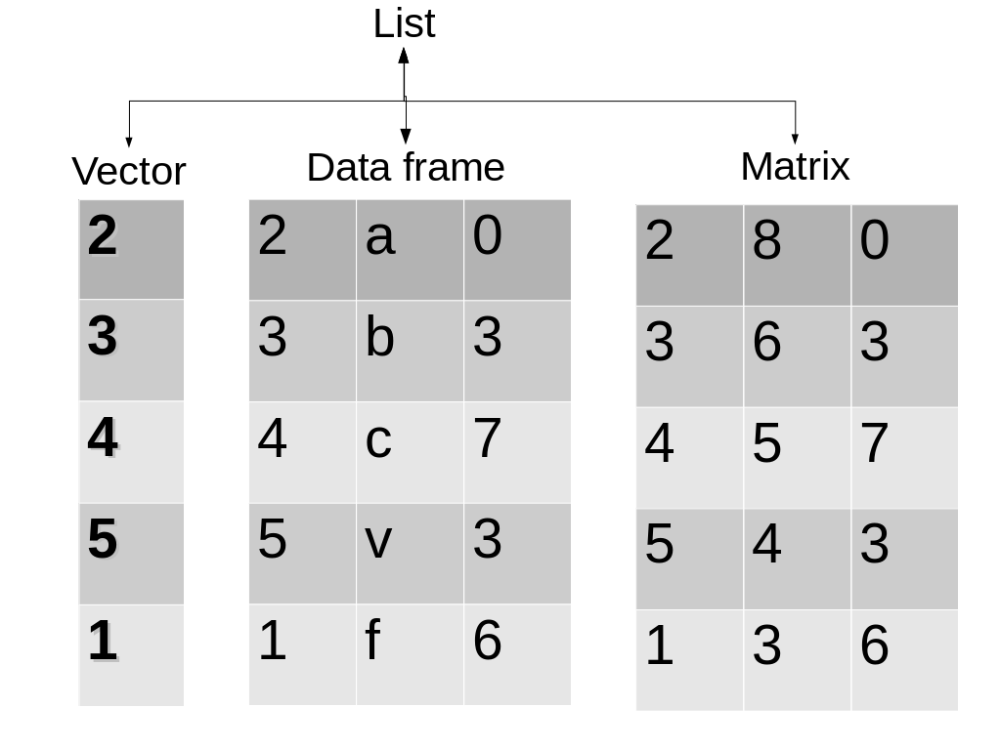
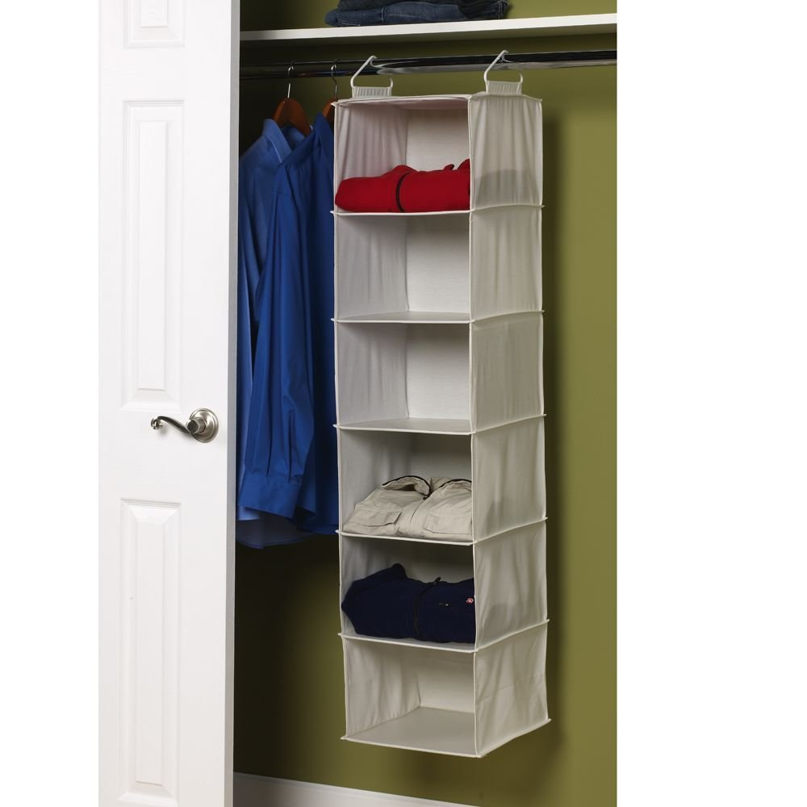

Clase 1 El tidyverse
Bienvenida
Curso: Introducción al Análisis y manipulación de datos geoespaciales
Primeros pasos
- ¿Quien no ha usado nunca R? Swirl
- Evaluación sencilla (Informes reproducibles + presentación reproducible)
- Evaluación por pares (Quien evalua a los evaluadores)
- Mucho trabajo personal guiado
- Pagina donde esta todo el curso
Como se organizan los datos en R
Estructura de datos
- Vector: Un conjunto lineal de datos (secuencia génica, serie de tiempo)
- Matrix: Una tabla con solo números
- Data Frame: Una tabla donde cada columna tiene un tipo de datos (estándar dorado)
- List: Aqui podemos meter lo que queramos
Vector
- Secuencia lineal de datos
- Pueden ser de muchos tipos (numéricos, de carácteres, lógicos, etc.)
- Ejemplo data(uspop)
- para crear uno c(1,4,6,7,8)
- para subsetear un vector se pone el índice entre []
- uspop[4], uspop[2:10], uspop[c(3,5,8)]

Lo entendimos?
Ejercicio
Respuesta
Data Frame
- Una tabla, cada columna un tipo de datos (Numérico, lógico, etc)
- Cada columna un vector
- Ejemplo data(iris)
- Para subsetear data.frame[filas,columnas]
- Ejemplos iris[,3], iris[“Petal.Length”], iris[2:5,c(1,5)], iris$Petal.Length

Ejercicio
| Numero | Letra | Medida |
|---|---|---|
| 4 | A | 67.21 |
| 5 | Q | 69.39 |
| 3 | D | 57.71 |
| 2 | J | 77.59 |
| 1 | F | 61.17 |
Alternativas
Respuesta
Principios de Tidydata
Tidy Data

- Cada columna una variable
- Cada fila una observación
Trabajemos tidy
dplyr
Paquete con pocas funciones muy poderosas para ordenar datos
Parte del tidyverse
group_by (agrupa datos)
summarize (resume datos agrupados)
filter (Encuentra filas con ciertas condiciones)
select junto a starts_with, ends_with o contains
mutate (Genera variables nuevas)
pipe: %>% o bien |> (de uso mas reciente)
arrange ordenar
summarize y group_by
- group_by reune observaciones según una variable
- summarize resume una variable
library(tidyverse)
Summary.Petal <- summarize(iris, Mean.Petal.Length = mean(Petal.Length),
SD.Petal.Length = sd(Petal.Length))| Mean.Petal.Length | SD.Petal.Length |
|---|---|
| 3.758 | 1.765298 |
summarize y group_by (continuado)
Summary.Petal <- group_by(iris, Species)
Summary.Petal <- summarize(Summary.Petal, Mean.Petal.Length = mean(Petal.Length),
SD.Petal.Length = sd(Petal.Length))| Species | Mean.Petal.Length | SD.Petal.Length |
|---|---|---|
| setosa | 1.462 | 0.1736640 |
| versicolor | 4.260 | 0.4699110 |
| virginica | 5.552 | 0.5518947 |
summarize y group_by (continuado)
- Pueden agrupar por más de una variable a la vez
data("mtcars")
Mtcars2 <- group_by(mtcars, am, cyl)
Consumo <- summarize(Mtcars2, Consumo_promedio = mean(mpg),
desv = sd(mpg))| am | cyl | Consumo_promedio | desv |
|---|---|---|---|
| 0 | 4 | 22.90000 | 1.4525839 |
| 0 | 6 | 19.12500 | 1.6317169 |
| 0 | 8 | 15.05000 | 2.7743959 |
| 1 | 4 | 28.07500 | 4.4838599 |
| 1 | 6 | 20.56667 | 0.7505553 |
| 1 | 8 | 15.40000 | 0.5656854 |
Dudas?
mutate
- Crea variables nuevas
DF <- mutate(iris, Petal.Sepal.Ratio = Petal.Length/Sepal.Length)| Sepal.Length | Sepal.Width | Petal.Length | Petal.Width | Species | Petal.Sepal.Ratio |
|---|---|---|---|---|---|
| 5.8 | 4.0 | 1.2 | 0.2 | setosa | 0.21 |
| 4.7 | 3.2 | 1.6 | 0.2 | setosa | 0.34 |
| 5.1 | 3.8 | 1.9 | 0.4 | setosa | 0.37 |
| 5.2 | 2.7 | 3.9 | 1.4 | versicolor | 0.75 |
| 6.4 | 2.9 | 4.3 | 1.3 | versicolor | 0.67 |
| 5.5 | 2.5 | 4.0 | 1.3 | versicolor | 0.73 |
| 6.5 | 3.0 | 5.8 | 2.2 | virginica | 0.89 |
| 6.0 | 2.2 | 5.0 | 1.5 | virginica | 0.83 |
| 6.1 | 2.6 | 5.6 | 1.4 | virginica | 0.92 |
| 5.9 | 3.0 | 5.1 | 1.8 | virginica | 0.86 |
Pipeline (%>%)
- Para realizar varias operaciones de forma secuencial
- sin recurrir a parentesis anidados
- sobrescribir multiples bases de datos
x <- c(1, 4, 6, 8)
y <- round(mean(sqrt(log(x))), 2)- Que hice ahí?
x <- c(1, 4, 6, 8)
y <- x %>%
log() %>%
sqrt() %>%
mean() %>%
round(2)[1] 0.99Pipeline (%>%)
- Muchos objetos intermedios
DF <- mutate(iris, Petal.Sepal.Ratio = Petal.Length/Sepal.Length)
BySpecies <- group_by(DF, Species)
Summary.Byspecies <- summarize(BySpecies, MEAN = mean(Petal.Sepal.Ratio),
SD = sd(Petal.Sepal.Ratio))| Species | MEAN | SD |
|---|---|---|
| setosa | 0.2927557 | 0.0347958 |
| versicolor | 0.7177285 | 0.0536255 |
| virginica | 0.8437495 | 0.0438064 |
Pipeline (%>%)
- Con pipe
Summary.Byspecies <- summarize(group_by(mutate(iris,
Petal.Sepal.Ratio = Petal.Length/Sepal.Length),
Species), MEAN = mean(Petal.Sepal.Ratio), SD = sd(Petal.Sepal.Ratio))| Species | MEAN | SD |
|---|---|---|
| setosa | 0.2927557 | 0.0347958 |
| versicolor | 0.7177285 | 0.0536255 |
| virginica | 0.8437495 | 0.0438064 |
Pipeline (%>%) otro ejemplo
library(tidyverse)
MEAN <- iris %>%
group_by(Species) %>%
summarize_all(.funs = list(Mean = mean, SD = sd))| Species | Sepal.Length_Mean | Sepal.Width_Mean | Petal.Length_Mean | Petal.Width_Mean | Sepal.Length_SD | Sepal.Width_SD | Petal.Length_SD | Petal.Width_SD |
|---|---|---|---|---|---|---|---|---|
| setosa | 5.006 | 3.428 | 1.462 | 0.246 | 0.3524897 | 0.3790644 | 0.1736640 | 0.1053856 |
| versicolor | 5.936 | 2.770 | 4.260 | 1.326 | 0.5161711 | 0.3137983 | 0.4699110 | 0.1977527 |
| virginica | 6.588 | 2.974 | 5.552 | 2.026 | 0.6358796 | 0.3224966 | 0.5518947 | 0.2746501 |
Mas dudas?
Filter
- Selecciona según una o más variables
| simbolo | significado | simbolo_cont | significado_cont |
|---|---|---|---|
| > | Mayor que | != | distinto a |
| < | Menor que | %in% | dentro del grupo |
| == | Igual a | is.na | es NA |
| >= | mayor o igual a | !is.na | no es NA |
| <= | menor o igual a | | & | o, y |
Ejemplos de filter agregando a lo anterior
data("iris")
DF <- iris %>%
filter(Species != "versicolor") %>%
group_by(Species) %>%
summarise_all(mean)| Species | Sepal.Length | Sepal.Width | Petal.Length | Petal.Width |
|---|---|---|---|---|
| setosa | 5.006 | 3.428 | 1.462 | 0.246 |
| virginica | 6.588 | 2.974 | 5.552 | 2.026 |
Ejemplos de filter
DF <- iris %>%
filter(Petal.Length >= 4 & Sepal.Length >= 5) %>%
group_by(Species) %>%
summarise(N = n())| Species | N |
|---|---|
| versicolor | 39 |
| virginica | 49 |
Más de una función
data("iris")
DF <- iris %>%
filter(Species != "versicolor") %>%
group_by(Species) %>%
summarise_all(.funs = list(Mean = mean, SD = sd))| Species | Sepal.Length_Mean | Sepal.Width_Mean | Petal.Length_Mean | Petal.Width_Mean | Sepal.Length_SD | Sepal.Width_SD | Petal.Length_SD | Petal.Width_SD |
|---|---|---|---|---|---|---|---|---|
| setosa | 5.006 | 3.428 | 1.462 | 0.246 | 0.3524897 | 0.3790644 | 0.1736640 | 0.1053856 |
| virginica | 6.588 | 2.974 | 5.552 | 2.026 | 0.6358796 | 0.3224966 | 0.5518947 | 0.2746501 |
Select
- Selecciona columnas dentro de un data.frame, se pueden restar
iris %>%
group_by(Species) %>%
select(Petal.Length, Petal.Width) %>%
summarize_all(mean)iris %>%
group_by(Species) %>%
select(-Sepal.Length, -Sepal.Width) %>%
summarize_all(mean)iris %>%
group_by(Species) %>%
select(contains("Petal")) %>%
summarize_all(mean)iris %>%
group_by(Species) %>%
select(-contains("Sepal")) %>%
summarize_all(mean)Resultado
| Species | Petal.Length | Petal.Width |
|---|---|---|
| setosa | 1.462 | 0.246 |
| versicolor | 4.260 | 1.326 |
| virginica | 5.552 | 2.026 |
Ejercicios
Casos_Activos <- read_csv("https://raw.githubusercontent.com/MinCiencia/Datos-COVID19/master/output/producto19/CasosActivosPorComuna_std.csv")Usando la base de datos del repositorio del ministerio de ciencias, genera un dataframe que responda lo siguiente:
- ¿Que proporción de las comunas ha tenido en algun momento mas de 50 casos por cada 100.000 habitantes?
- Genera un dataframe, donde aparezca para cada comuna que haya tenido sobre 50 casos por cada 100.000 habitantes, cuantos días ha tenido sobre ese valor.
- Genera una tabla de cuales comunas han tenido sobre 50 casos por cada 100.000 habitantes y de esas comunas crea una variable que sea la prevalencia máxima de dicha comuna.
Bonus (Esto requiere investigar no basta con lo que aprendimos)
Ve cuales son las 10 comunas que han tenido la mayor mediana de prevalencia, para cada una de estas 10 comunas, genera una tabla con la mediana, prevalencia máxima y fecha en que se alcanzó la prevalencia máxima
Nos vemos a las 12:45
Para la otra clase, es necesario:
- Crearse cuenta de github
- Instalar los paquetes knitr, rmarkdown y kableExtra